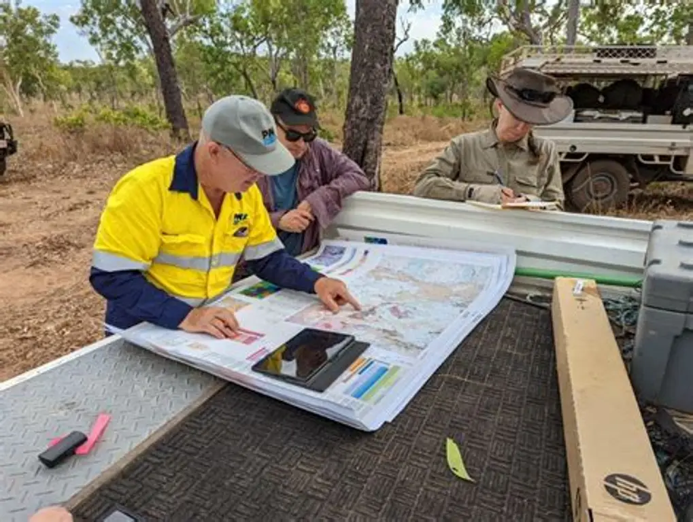

Corner-Circle
Spot repeating shapes and unexpected curves on a quick neighborhood loop.
Approximate length: 15–20 minutes

A Pocket Expedition is a printed mini-guide for a roughly twenty-minute wander. It has a simple route, a few story prompts, and observation challenges that work for one person or a small group.
Our first collection stays intentionally small, with three routes that can be enjoyed separately or traded with a friend:
Spot repeating shapes and unexpected curves on a quick neighborhood loop.
Approximate length: 15–20 minutes
Notice reflections, colors, and shifting light along a public arcade.
Approximate length: 15–20 minutes
Find a calm public place to pause, listen, and sketch a sound in words.
Approximate length: 25–30 minutes
All routes stay on public, walkable paths and are designed for daylight visits.